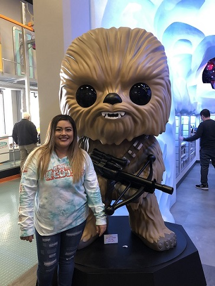
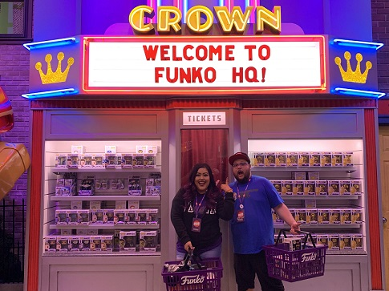
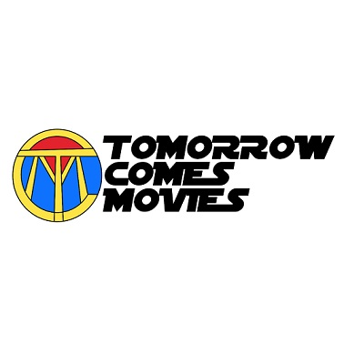

Carissa's favorite Star Wars character is Chewie. Here she is pictured with a life-sized Funko Pop! of Chewie at the Funko HQ in Washington.
Carissa and Patric at Funko Headquarters in Washington

During a trip to Washington, Carissa and Patric visited Funko Headquarters to add some more items to the their ever expanding collection.
As you can see both of their baskets are full! At the HQ there are more Pops! than you can imagine. They have told us that you can spend days looking around.
Tomorrow Comes Movies

Tomorrow Comes Movies is the name of Carissa and Patric's podcast and their YouTube channel. Here they discuss movies and TV shows as
well as unboxing Funko Pops! that they have either gotten in a mystery box, or one that they have been searching for, their Holy Grail.